Movimientos de extensión cognitiva
Páginas Relacionadas: Taller de Diseño de Interacción 2024
Proyectos Relacionados: La formación de hábitos en la toma de decisiones
Torneo Semana Farándula 2024
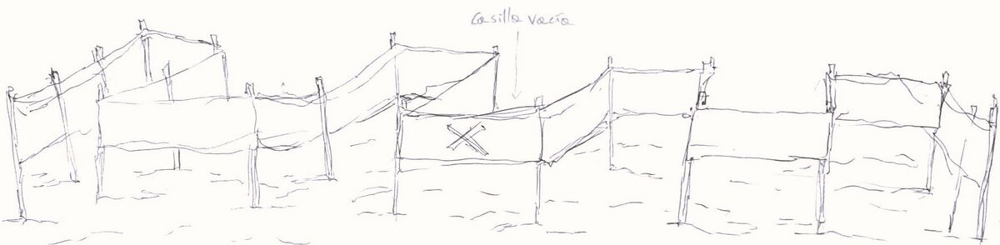3 casillas por equipo y una vacía
4 jugadores en cada casilla aproximadamente
Cada extremo (equipos distintos) tendrá un grupo de balones que deberá hacer llegar al otro extremo, debe cruzar el campo
Para que llegue el balón debe pasar desde el punto 1 al 2 y luego hasta la M (meta)
Al llegar al otro extremo, cada balón se sacará del campo de juego
Cada balón significa 1 PUNTO para el equipo
Gana el equipo que tenga la mayor cantidad de puntos en el tiempo estipulado
El campo de juego altera la manera del movimiento y desplazamiento de los jugadores, además que se les reduce el campo de visión, no pudiendo medir de manera óptima la distancia entre las casillas de sus casillas de sus equipos, esto hace que los cuerpos se desenvuelvan de una manera inusual al probar la experiencia.
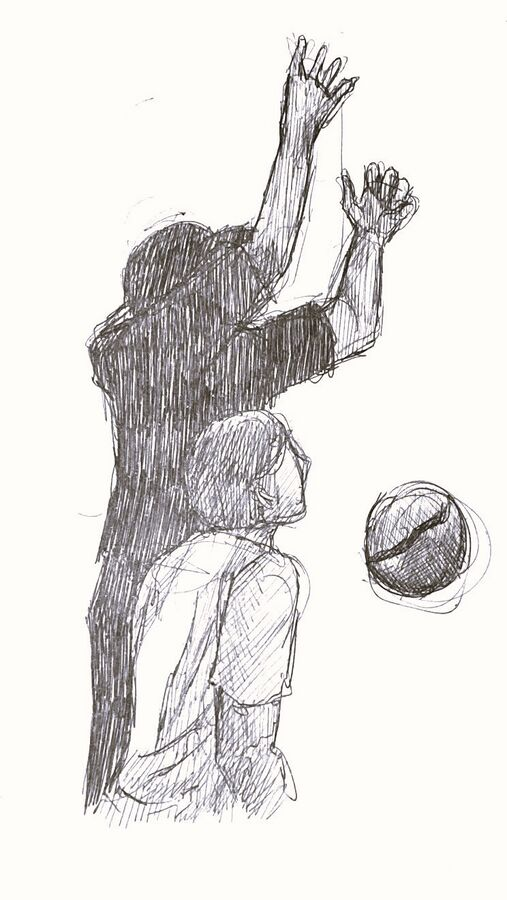Una mano está por encima de la otra, como priorizando que esta atrape la pelota, mientras que la otra parece estar de apoyo, como mero reflejo.
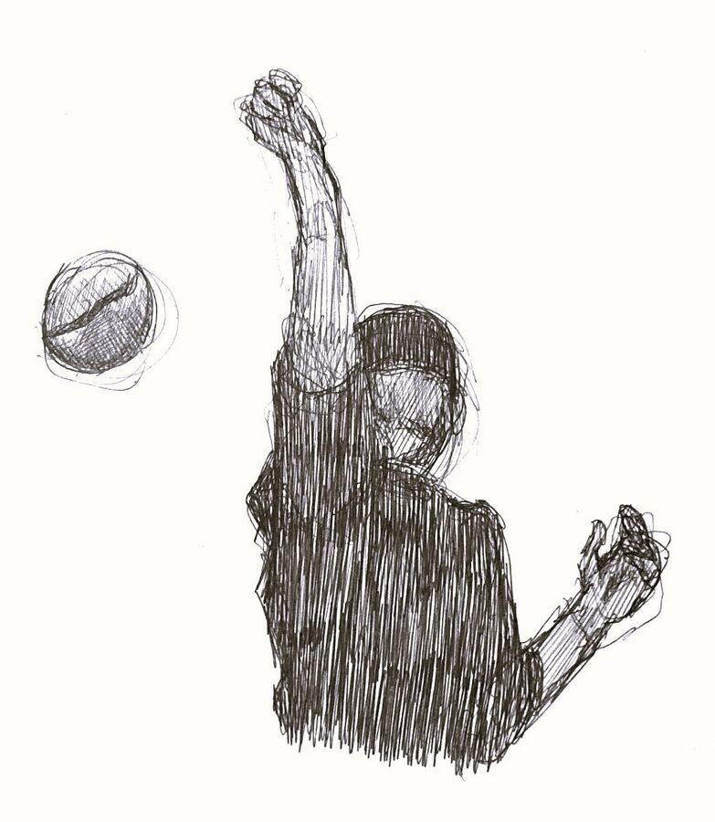Esto se muestra una vez que el objeto (la pelota) sobrepasa al cuerpo y al espacio alcanzable, se aprecia como se alza la mano derecha en un intento de atrapar la pelota, mientras que la mano izquierda se retrae.
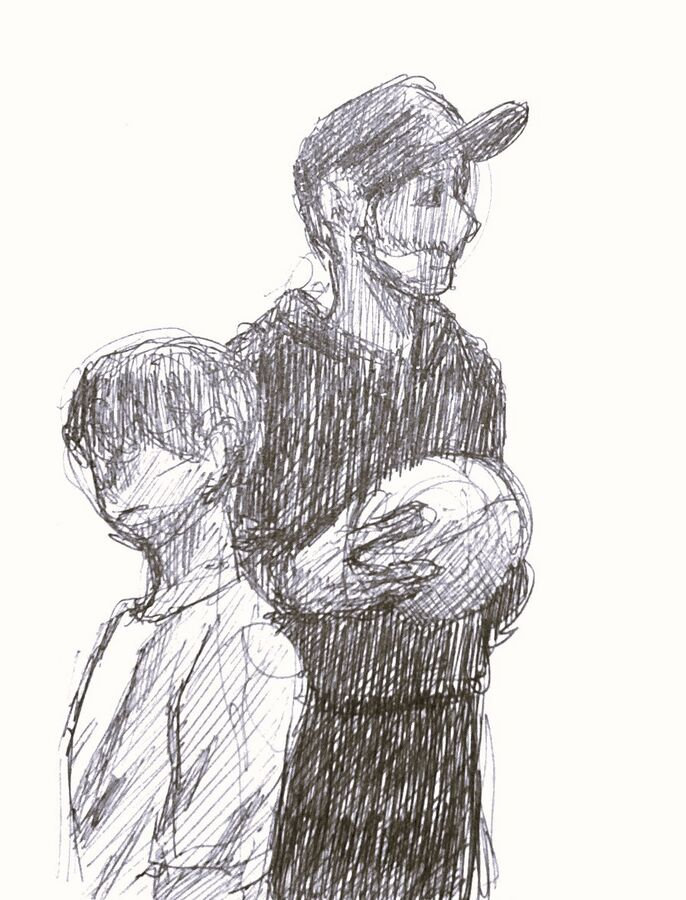 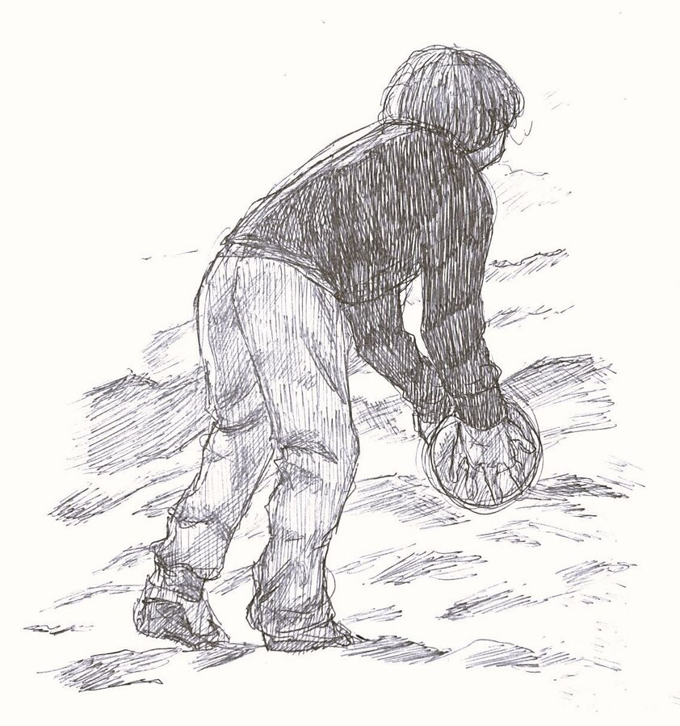Se produce un despliegue del cuerpo; primero empieza en lo más mínimo, encorvado hacia dentro, con la pelota cerca del suelo.
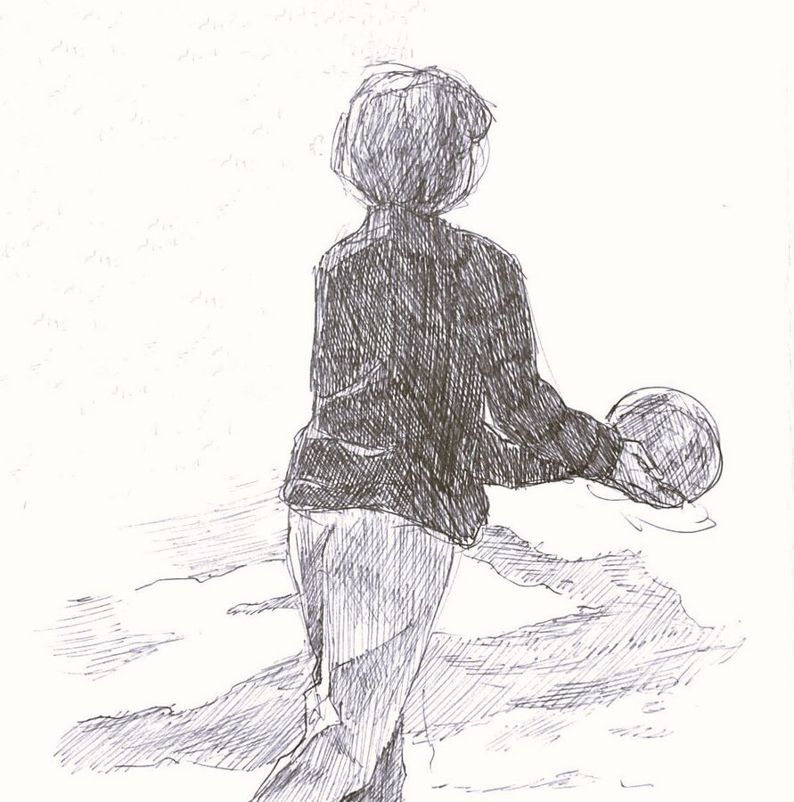Poco a poco se va abriendo, enderezando el cuerpo y elevando la pelota y la mirada, extendiendo los brazos.
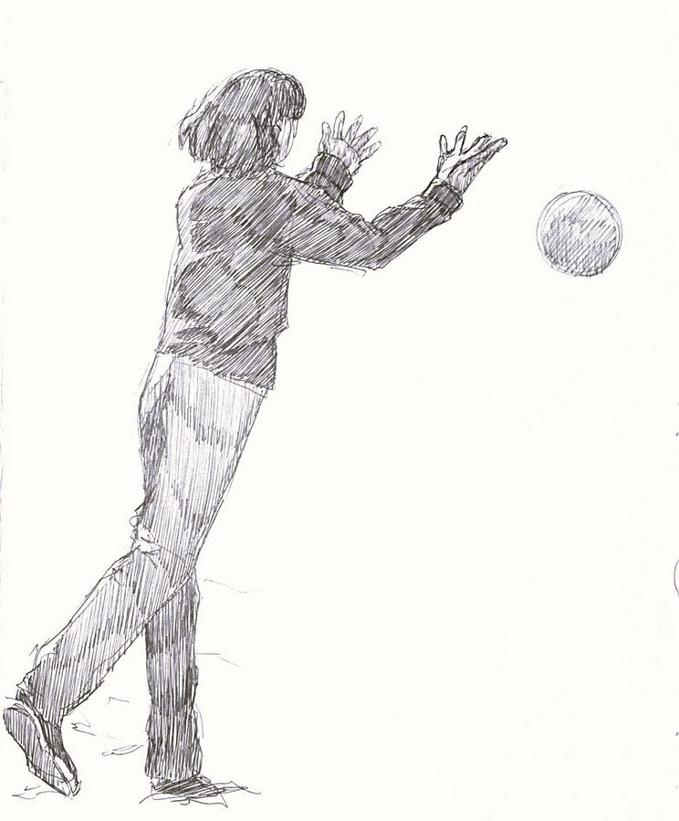Se toma impulso desde los pies y se abren los brazos, lanzando la pelota, llegando en ese momento al máximo del movimiento del cuerpo en ese momento.
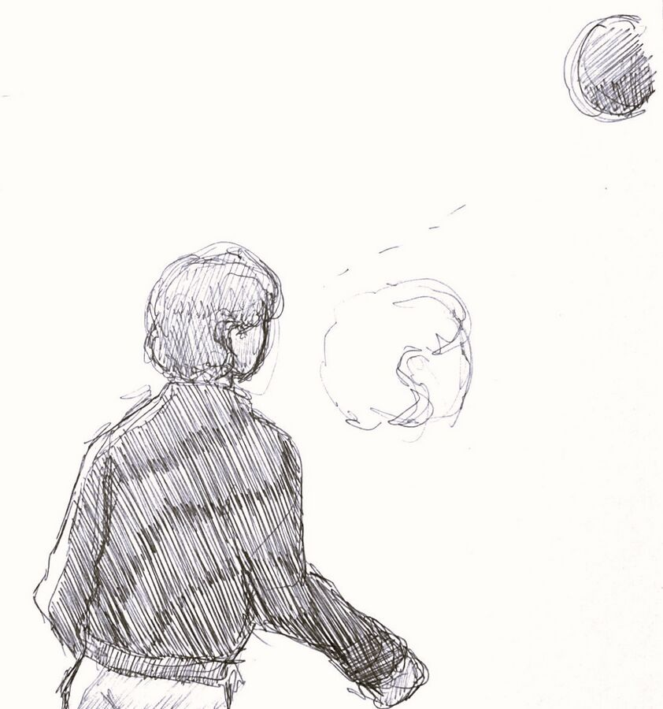El cuerpo por un instante se queda en pausa y la cabeza queda en dirección a la trayectoria de la pelota, posando toda la atención al movimiento del objeto.
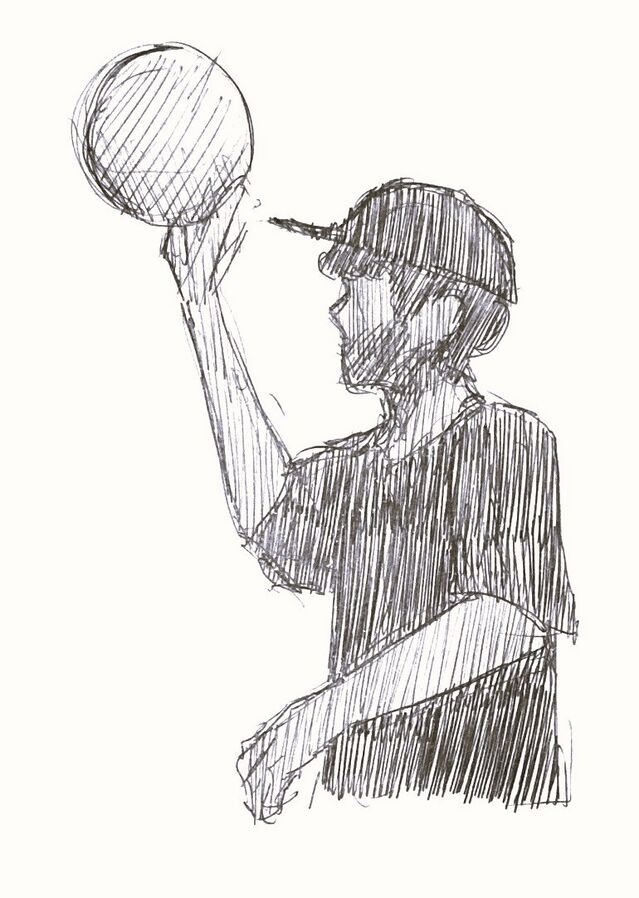Se toma la pelota como si se estuviera midiendo el posible desplazamiento de la misma.
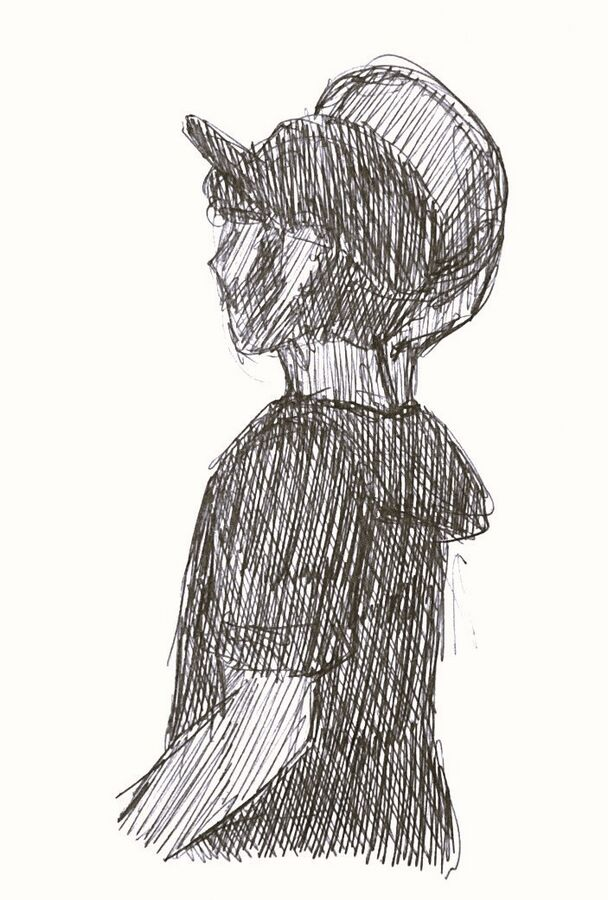Se contrae el brazo y hombros, la pelota queda una altura similar a la cabeza.
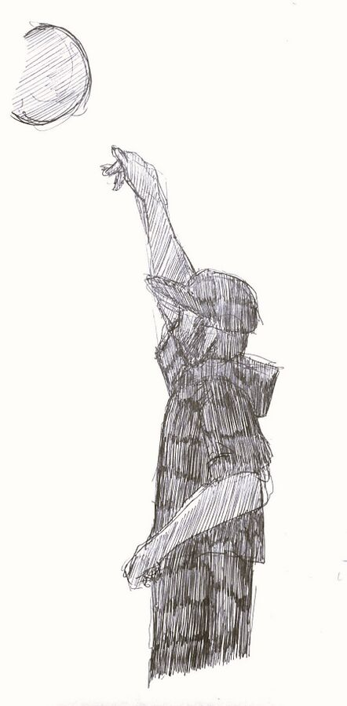Se lanza estirando el brazo y haciendo un movimiento en los hombros concordantes, la mano también hace un movimiento a modo de darle un impulso a la pelota con la palma y dedos.
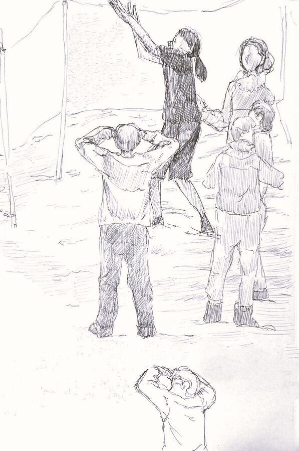Algunos alzan los brazos a modo del posible recibimiento del objeto. En este caso parece más que se busca cesar el movimiento y trayectoria de la pelota que solo recibir el pase.
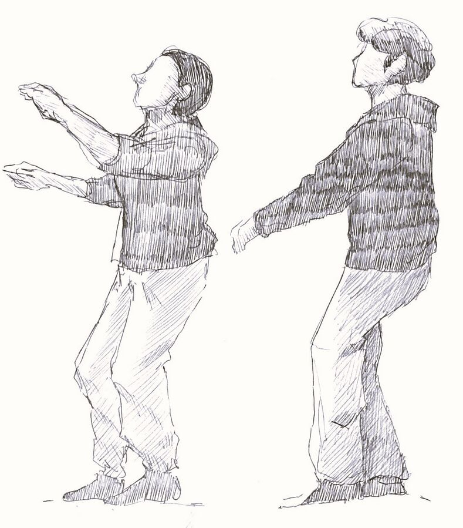La luz del sol está en contraposición del espacio de juego. Varias personas adoptan la posición donde manos y brazos forme una sombra alrededor de los ojos para poder apreciar como se desenvuelve el juego.
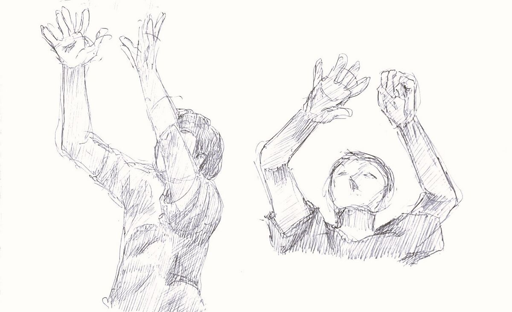